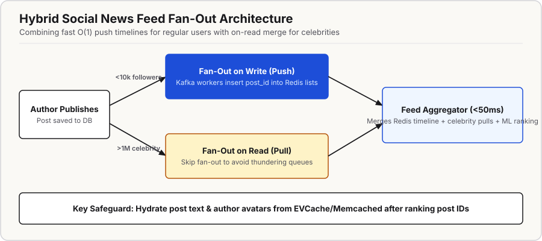

Module 34: System Design — News Feed System
Comprehensive architectural breakdown of a large-scale News Feed service (Twitter/X, Facebook/Instagram), covering Fan-out-on-Write (Push), Fan-out-on-Read (Pull), Hybrid Celebrity fanout models, and Redis timeline ranking.
Prerequisites
Before tackling the news feed system, review these core modules:
- 10 - Caching Patterns (Cache-aside, write-through, and timeline storage)
- 16 - Consistent Hashing (Partitioning feed queues across Redis nodes)
- 17 - Message Queues (Asynchronous fanout worker pools)
- 28 - Distributed Unique ID Generator (Time-sortable Snowflake 64-bit IDs)
ELI5 (30-Second Summary)
Imagine you write a short letter to your 10 friends. You can either walk to each friend's house and drop a copy in their mailbox (Push / Fan-out-on-Write), or your friends can walk to your house every morning and read what you wrote on your front porch chalkboard (Pull / Fan-out-on-Read).
Push is great because when your friends wake up, their mailboxes are already full—reading their feed is instantaneous! But what if you are a superstar celebrity with 100 million fans? If you post a letter, walking to 100 million houses creates a traffic jam that crashes the city.
A Hybrid News Feed pushes posts to regular friends' mailboxes instantly, but for mega-celebrities, fans fetch their posts only when they open the app and merge them into their timeline on the fly!
Physical Analogy
Think of a Suburban Postal Route vs. Central Newspaper Kiosk:
| Physical Analogy | News Feed Architecture Concept | Technical Description |
|---|---|---|
| Author writing an article | Post Publishing API (POST /v1/feed) |
Ingests post content, media references, and metadata. |
| Suburban Mail carrier | Fan-out Worker Pool (Async Queue) | Reads follower list and pushes post ID into follower inbox caches. |
| Personal Home Mailbox | User Feed Timeline (Redis Sorted Set ZSET) |
Stores pre-computed list of Post IDs sorted by timestamp/rank. |
| Celebrity Newspaper Kiosk | Celebrity Outbox Cache (Pull Fan-out) | Standalone feed buffer read on-demand during timeline fetch. |
| Reading today's breakfast mail | Feed Retrieval API (GET /v1/feed) |
Pulls top 20 Post IDs from Redis, hydrating full posts from KV cache. |
The Problem It Solves
Social networks with hundreds of millions of daily active users (DAUs) face severe asymmetric read/write traffic:
- Massive Read Dominance: Users read their feed 50x to 100x more often than they post (100:1 read-to-write ratio).
- Sub-100ms Latency Expectation: When a user launches the app, their timeline must render within 100 milliseconds. Joining thousands of followee tables via relational SQL
SELECT * FROM posts WHERE user_id IN (SELECT followee_id...) ORDER BY created_at DESClocks tables and takes dozens of seconds at scale. - The Celebrity "Hotspot" Problem: A user with 80 million followers publishing a post requires 80 million database/cache write operations in seconds, overwhelming worker queues.
Visual Architecture

flowchart TD
subgraph PublishingPath["1. Post Publishing Flow (Fan-out on Write)"]
ClientPost["User Client"] -->|"POST /v1/posts"| Gateway["API Gateway / LB"]
Gateway --> PostSvc["Post Service"]
PostSvc --> DBPost[("Post DB / Blob Store")]
PostSvc --> FanoutQueue["Kafka / RabbitMQ (Fanout Queue)"]
FanoutQueue --> FanoutWorkers["Fanout Worker Pool"]
FanoutWorkers --> FollowerSvc["Graph Service (Get Followers)"]
FollowerSvc --> FilterCeleb{"Is Author Celebrity (>10k)?"}
FilterCeleb -->|"No (Normal User)"| PushRedis["Push Post ID to Follower Timelines (Redis ZSET)"]
FilterCeleb -->|"Yes (Celebrity)"| SkipPush["Write ONLY to Celebrity Outbox Cache"]
end
subgraph ReadingPath["2. Feed Generation Flow (Hybrid Merge)"]
ClientRead["User Client"] -->|"GET /v1/feed?page=1"| FeedSvc["News Feed Service"]
FeedSvc --> ReadZset["1. Fetch Top 100 Post IDs from User's Redis ZSET"]
FeedSvc --> FetchCeleb["2. Query Followed Celebrities' Outboxes"]
FeedSvc --> MergeSort["3. K-Way Merge & Rank Candidates"]
MergeSort --> Hydrate["4. Hydrate Post Bodies & User Data from Memcached"]
Hydrate --> ReturnJSON["5. Return Enriched JSON to Client"]
endReal Numbers & System Sizing
Consider a platform like Twitter or Instagram with 300 Million Daily Active Users (DAU):
- Posting Volume:
- Average posts per user: 2 posts/day.
- Total posts/day: 300M × 2 = 600 million posts/day.
- Average write QPS: 600M / 86,400 ≈ 7,000 posts/second.
- Peak write QPS: 7,000 × 2 = 14,000 writes/second.
- Feed Generation / Read Volume:
- Average feed views per user: 10 views/day.
- Read QPS: (300M × 10) / 86,400 ≈ 35,000 QPS.
- Peak read QPS: ≈ 70,000 reads/second.
- Fan-out Amplification:
- If average user has 200 followers:
- Fan-out write rate: 7,000 posts/s × 200 = 1.4 million timeline updates/second!
- Memory Sizing for Timelines (Redis ZSET):
- Keep top 800 post IDs in each active user's timeline.
- 8-byte Snowflake Post ID + 8-byte score (timestamp) = 16 bytes per entry.
- 800 × 16 bytes ≈ 12.8 KB per user timeline.
- For 300 million active users: 300M × 12.8 KB ≈ 3.84 TB of RAM.
- A Redis cluster of 32 nodes with 128 GB RAM each comfortably handles this in-memory with redundancy.
Deep Dive: Under the Hood
1. Fan-Out on Write (Push Model)
- How it works: When Alice posts, a background worker queries the social graph for Alice's 200 followers and inserts
alice_post_iddirectly into each follower's Redis timeline (ZADD timeline:user_bob <timestamp> <post_id>). - Pros: Reading feeds is lightning fast (O(1) to O(k) Redis range query).
- Cons: Write amplification. If a celebrity with 50 million followers posts, the worker must execute 50,000,000 cache writes. If inactive users never open the app, those computed timelines represent wasted CPU and RAM.
2. Fan-Out on Read (Pull Model)
- How it works: Timelines are never pre-computed. When Bob opens the feed, the server fetches the latest posts from all 500 people Bob follows, merges them by timestamp, and returns the top 20.
- Pros: Zero write amplification; inactive users consume zero processing power.
- Cons: Reading is extremely slow and compute-heavy (O(N \log k) merge over hundreds of followee streams at read time).
3. The Hybrid Celebrity Model (Industry Standard)
- Users with < 10,000 followers use Fan-out on Write.
- Celebrities/Influencers with > 10,000 followers use Fan-out on Read.
- When Bob opens his feed:
- The server fetches Bob's pre-computed Redis timeline (containing posts from his regular friends).
- The server queries the outbox caches of the 3 celebrities Bob follows.
- The server performs an in-memory K-way merge sort across these streams to assemble the final ranked feed.
Trade-offs & Decision Matrix
| Dimension | Fan-out on Write (Push) | Fan-out on Read (Pull) | Hybrid Push-Pull Model |
|---|---|---|---|
| Read Latency | Ultra-low (< 10 ms) | High (200 - 800 ms) | Very low (15 - 30 ms) |
| Write Latency / Load | Massive write amplification | Minimal (O(1) post insert) | Balanced & predictable |
| Celebrity Handling | Catastrophic (queue backlogs) | Excellent | Excellent (special outbox routing) |
| Resource Utilization | High RAM (stores dormant feeds) | High CPU during read spikes | Optimal (RAM for active, CPU on-demand) |
Common Pitfalls & Anti-Patterns
- Hydrating Full Post Objects in the Timeline Queue: Storing the entire post JSON (text, comments, author profile) inside the follower's Redis ZSET multiplies storage by 1,000x. Rule: Only store 64-bit Post IDs in the feed timeline; hydrate full post objects from Memcached/Redis KV cache only for the paginated window being viewed.
- Infinite Timeline Retention: Keeping years of post history in Redis. Most users only browse the most recent 500-1,000 posts. Set a hard limit on Redis ZSET size (
ZREMRANGEBYRANK user:timeline 0 -801). - Synchronous Fanout in Web Request Handler: Iterating over followers inside the HTTP
POST /postshandler blocks the client for minutes. Fanout must always be decoupled into an asynchronous message queue (Kafka).
Try It Yourself
A runnable, zero-dependency Python simulation demonstrating normal user fanout-on-write, celebrity fanout-on-read outbox routing, and real-time hybrid feed merge ranking is included in this directory.
Run the simulation:
python demo.py
Production References & Further Reading
- Twitter Engineering: Timelines at Scale
- Facebook Engineering: Serving Large-Scale Social Graph Data with Tao
- Alex Xu: System Design Interview Vol 1 - Chapter 11 (Design a News Feed System)
Top 5 Interview Questions with Model Answers
Q1: How do you handle the "Celebrity Problem" (Hotspot) in a News Feed system?
Model Answer: The celebrity problem occurs when an account with millions of followers publishes a post, causing write amplification that chokes message queues. We solve this using a Hybrid Fan-out Model:
- Regular users (< 10k followers) use fan-out on write (pushing Post IDs to follower inboxes upon publishing).
- Celebrities (> 10k followers) bypass the follower queue entirely; their posts are written only to their personal outbox cache.
- When a follower requests their feed, the system fetches their pre-computed inbox and merges it with the outbox streams of the celebrities they follow using an in-memory priority queue (K-way merge).
Q2: What data structure in Redis is ideal for user news feeds and why?
Model Answer: Redis Sorted Sets (ZSET) are optimal. The member is the unique 64-bit post_id, and the score is the integer timestamp (or ranking score).
- Insertion is O(\log N) via
ZADD. - Pagination is instantaneous via
ZREVRANGEBYSCOREorZREVRANGE(O(\log N + M) where M is the page size of 20 items). - Trimming old items to enforce an 800-item cap is O(\log N) using
ZREMRANGEBYRANK.
Q3: How do you support non-chronological ranked feeds (e.g., machine learning relevance scoring)?
Model Answer: Feed ranking operates in a multi-stage pipeline:
- Candidate Retrieval: Fetch the top 500-1,000 recent candidate post IDs from the user's hybrid inbox.
- Feature Hydration: Enrich candidate IDs with author authority, user affinity score, post engagement (likes, comments, recency), and media type.
- ML Scoring Model: Pass feature vectors through a lightweight ranking model (e.g., GBDT or deep neural network) to output an affinity probability P(click).
- Re-sorting & Delivery: Sort the candidate items by score, apply business heuristics (e.g., diversity rules preventing 5 consecutive videos), and return the top 20 to the client.
Q4: How do you paginate a news feed reliably without missing or duplicating posts?
Model Answer: Traditional offset-based pagination (OFFSET 20 LIMIT 20) fails in real-time feeds because new posts inserted at the top shift indices, causing duplicate or skipped items across pages. We use Cursor-Based Pagination using time-sortable Snowflake IDs:
- The client requests
GET /v1/feed?limit=20&cursor=1789234812349000. - The server queries
ZREVRANGEBYSCORE timeline <cursor> -inf LIMIT 1 20. - Because Snowflake IDs are monotonically increasing with time, cursor pagination remains completely stable regardless of newly arriving posts.
Q5: How do you manage timeline storage for inactive users who haven't opened the app in months?
Model Answer: We implement Active User Gating:
- If a user has not authenticated in 30 days, we mark them as inactive in the user profile table and evict their Redis timeline to reclaim RAM.
- When an author publishes a post, the fanout worker checks follower activity status and skips inactive followers.
- When an inactive user logs back in, we dynamically reconstruct their timeline on demand (Fan-out on Read) by pulling the last 30 days of posts from their followees, seeding their Redis ZSET before returning the feed.
Check Yourself Quiz
1. Why is Fan-out on Write preferred for read-heavy social platforms with standard users?
A) Because it eliminates the need for database storage.B) Because it converts expensive multi-table read joins into instantaneous O(1) cache lookups at read time.
C) Because it requires zero message queues.
D) Because it avoids using Redis.
Answer: B. By pre-computing timelines at write time, user reads are instant cache lookups, satisfying sub-100ms mobile expectations.
2. Why should full post content NOT be stored directly in follower timeline caches?
A) Redis cannot store text.B) Storing full posts across millions of follower lists causes massive data redundancy and memory exhaustion; storing only 64-bit Post IDs saves 95%+ RAM.
C) Post content must be encrypted with SSL inside Redis.
D) Because post IDs cannot be indexed.
Answer: B. Storing only the 8-byte ID reduces the footprint to a few kilobytes per user; content is hydrated only when viewed.
3. What pagination strategy prevents duplicated posts when a user scrolls down while new posts arrive?
A) Offset-based pagination (`OFFSET 50`)B) Cursor-based pagination using monotonically increasing Snowflake IDs
C) Random sampling
D) Polling every 5 seconds
Answer: B. Cursor pagination queries strictly earlier timestamp/IDs than the last viewed item, immune to top-of-feed insertions.
4. In a hybrid fanout system, how is a post by a celebrity with 20M followers distributed?
A) Pushed to all 20M follower inboxes immediately.B) Saved only to the celebrity's outbox cache; merged on-the-fly when followers load their feed.
C) Sent via SMS to all followers.
D) Discarded until the next day.
Answer: B. Writing to the celebrity outbox avoids millions of immediate writes, deferring the merge to read time.
5. What cache eviction policy is most suitable for News Feed timeline Redis clusters?
A) LFU (Least Frequently Used)B) LRU / TTL-based eviction prioritizing recently active users
C) Random eviction
D) Never evict; crash on full memory
Answer: B. Feeds of dormant users should be evicted first, while active users' timelines remain hot in RAM.